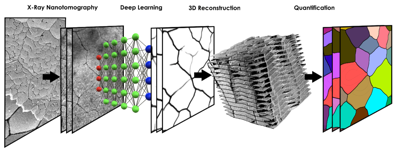
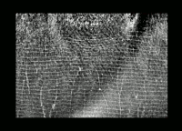
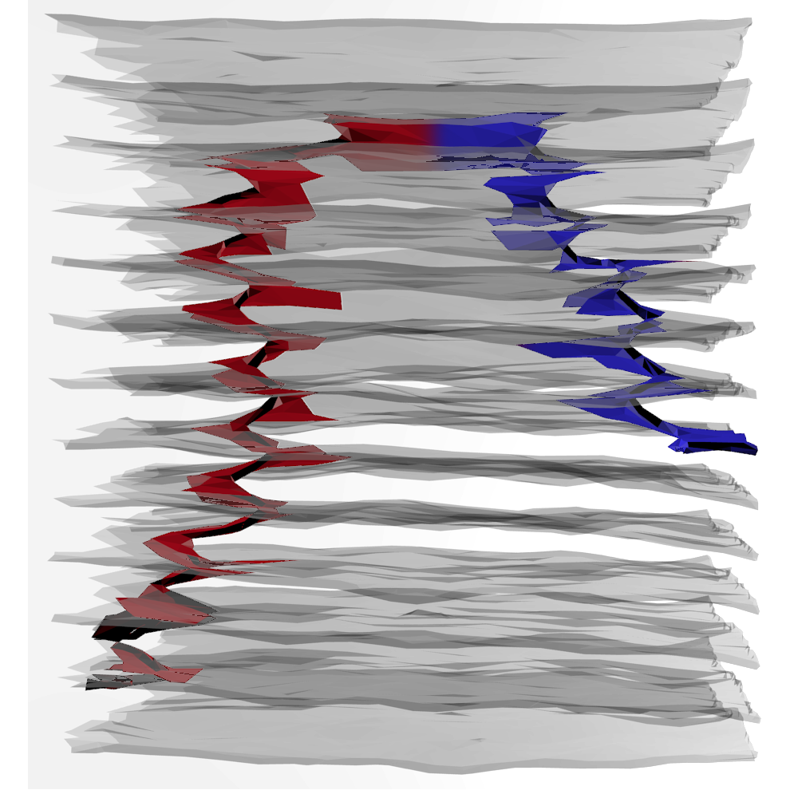

Publications
Quantification of sheet nacre morphogenesis using X-ray nanotomography and deep learning
M. Beliaev, D. Zöllner, A. Pacureanu, P. Zaslansky, L. Bertinetti, I. Zlotnikov
JSB 2019


Filtered tomograms using Deep Learning algorithm, performed 3D visualizations, statistical analysis of morphology and fitting to physical laws.
Dynamics of Topological Defects and Structural Synchronization in a Forming Nacre
M. Beliaev, D. Zöllner, A. Pacureanu, P. Zaslansky, I. Zlotnikov
In review


Segmented layers from raw data using combination of deep learning, filters and morphological operations. Segmented topological defects in 3D using Modo and Blender. Modeled and simulated their behaviour starting from experimental intial conditions using complex system model.